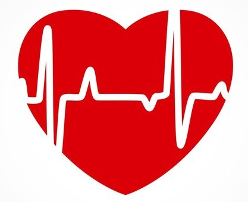
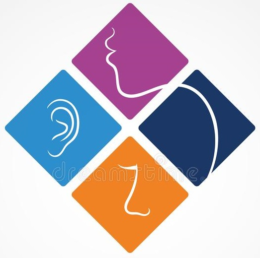
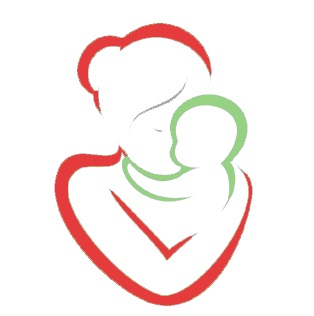

Services We Offer

Cardiology
The department consists of 11 leading Interventional Cardiologists, some of them being legendary in the field of cardiology.
We have ultramodern non-invasive cardiology investigations which consists of latest colour doppler, echo machines,
treadmill and holter monitoring.
The department also has advanced Nuclear Medicine, where Thallium Stress Test and PET Scan are carried out for the patients who require these procedures for final diagnosis of their cardiac status.

ENT Ward
This is a specialty dealing with ear, nose and throat diseases, which includes most of the head and neck ailments.
The department also has a sophisticated audiology and speech therapy centre with the state of art diagnostic and therapeutic facilities.
The department is dedicated to expanding the frontiers of diagnosis, treatment and research of disorders of the ear, nose and sinuses , throat and the anterior skull base.

Genaral Physiology
The department consists of 16 leading General Physicians, some of them being legendary in the field of General Physiology.
The physicians have years of experience in this field.
Our department provide medical doctors who treat acute and chronic illnesses and provides preventive care and health education to patients.

Maternity Ward
Our aim of the care is to achieve a healthy mother and child with the least possible level of intervention that is compatible with safety.
This is done by keen observation; monitoring of the fetal condition and of the condition of the infant after birth; assessment of risk factors; early detection of problems.
Throughout labour and delivery your physical and emotional well-being is regularly assessed. This implies measuring of temperature, pulse and blood pressure, checking fluid intake and urine output, assessing pain and need of support.